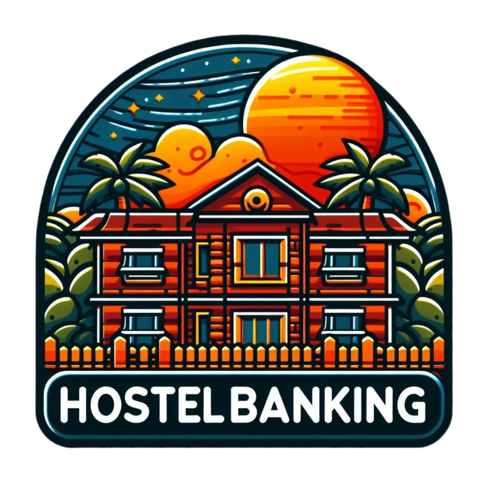

<nz-layout class="min-h-full ">
  <nz-layout class="bg-[#f7fafc]">
    <nz-header class="bg-white  my-2 h-fit">
      <ng-container>
        <div class="w-full lg:w-[1200px] m-auto flex flex-col lg:flex-row items-center justify-between h-full gap-x-2">
          <div class="flex gap-3 items-center cursor-pointer" [routerLink]="['/']"
            routerLinkActive="router-link-active"> 
            <span class="h-fit text-[16px] lg:text-[24px] text-primary font-bold select-none">{{'Menu.titleWeb'|
              translate}}</span>
          </div>
          <div class="flex gap-3">
            <div class="flex items-center gap-4">
              <!-- <i class="fa-regular fa-bell icon mr-[15px]"></i>

              <div class="flex items-center space-x-2 justify-center rounded-full w-10 h-10 relative">
                
                <div class="rounded-full w-2 h-2 bg-green-600 absolute bottom-0 right-0  translate-y-[-50%]">
                </div>
              </div>

              <div class="flex items-center space-x-2 ml-2 justify-center">
                <span class="font-[500] text-[16px]">Nguyễn Đặng Hùng</span>
              </div> -->
              <div class="flex gap-3 items-center">
                <button *ngIf="!isLogin" class="hover:text-primary">{{'Button.login' | translate}}</button>
                <button *ngIf="!isLogin" class="hover:text-primary">{{'Button.register' | translate}}</button>
                <button class="hover:text-primary" [routerLink]="['/postNews']"
                  routerLinkActive="activeLink">{{'Button.post' | translate}}</button>
                
                <nz-dropdown-menu #menu="nzDropdownMenu">
                  <ul nz-menu>
                    <li nz-menu-item [routerLink]="['/userInfor',1]" routerLinkActive="activeLink">
                      {{"Menu.accountInfor"| translate}}</li>
                    <li nz-menu-item [routerLink]="['/managerPost',1]" routerLinkActive="activeLink">
                      {{"Menu.postManagement"| translate}}</li>
                    <li nz-menu-divider></li>
                    <li nz-menu-item>{{"Menu.logout"| translate}}</li>
                  </ul>
                </nz-dropdown-menu>
              </div>
              <div
                class=" rounded-[50%] absolute top-3 right-4 lg:static size-[25px] text-[12px] cursor-pointer !border-[#1C274C] border bg-[#FFF] flex justify-center items-center">
                <span *ngIf="language==='vi'" (click)="changeLanguage('en')" class="select-none">VN</span>
                <span *ngIf="language==='en'" (click)="changeLanguage('vi')" class="select-none">EN</span>
              </div>

            </div>
          </div>
        </div>
      </ng-container>
    </nz-header>
    <nz-content>
      <div class=" border-t border-solid border-primary h-full">

        <div class=" w-full lg:w-[1200px] m-auto pb-6">
          <div class="px-2 lg:px-0"> <router-outlet></router-outlet></div>
        </div>
      </div>
    </nz-content>
    <nz-footer>
      <div class="flex flex-col items-center justify-center py-4"><span>Đồ án Chuyên ngành công nghệ phần mềm</span>
        <span>Vương Quang Huy & Nguyễn Thế Khải</span>
      </div>
    </nz-footer>
  </nz-layout>
</nz-layout>